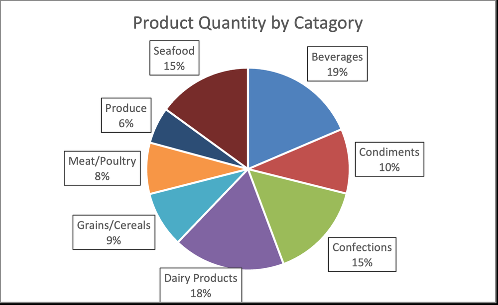
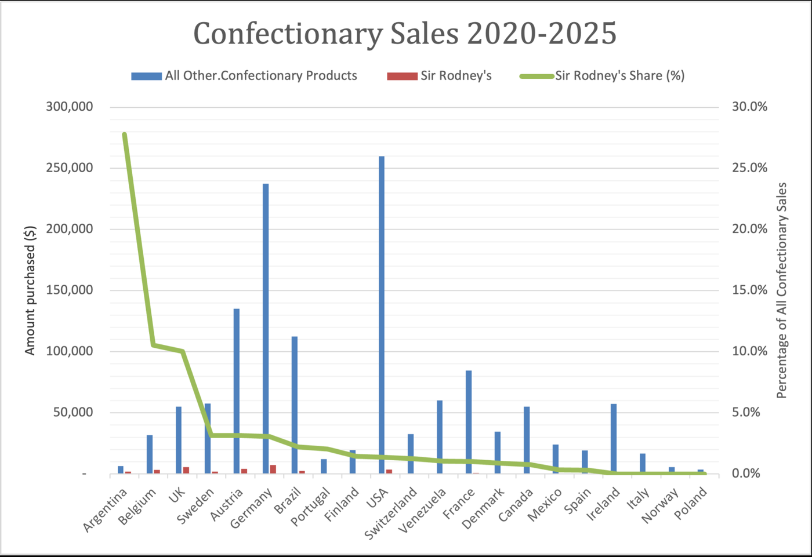
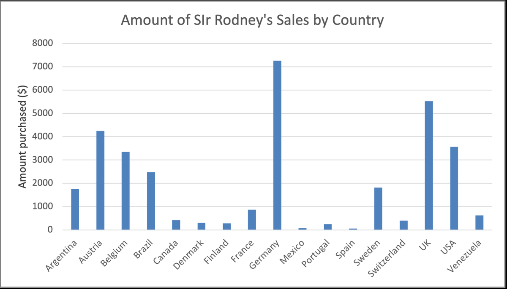
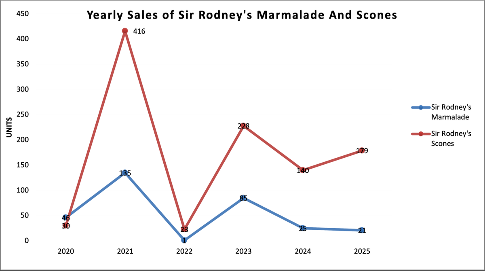
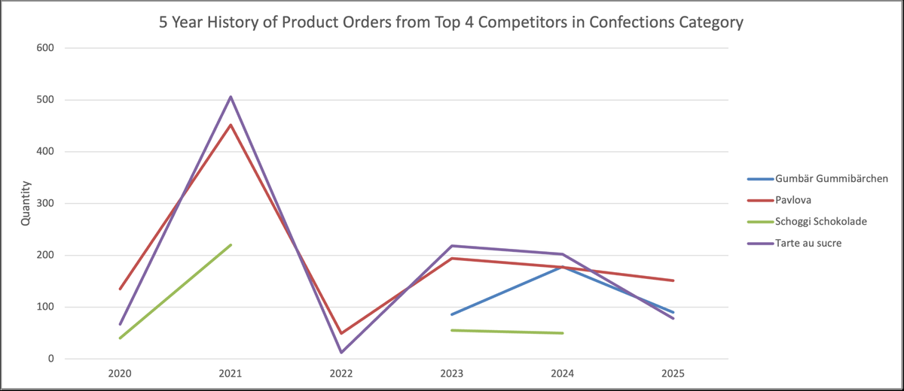

Business Analytics Project
CIS 236 Honors AI in Business
As Project Manager for a four-person consulting team, I helped Northwind Traders turn sales data into revenue, customer, and inventory recommendations. We backed those recommendations with Tableau dashboards, Excel analysis, and a vendor-ready RFP.
Category mix and brand performance were uneven across markets. Confections stood out as a focus area, with Sir Rodney's products strong in a few countries and under-indexed in high-volume markets like Germany and the USA.


Zooming into one manufacturer clarified where growth was concentrated and where volatility needed attention in forecasting and supply planning.



This project sharpened my skills in business analytics, visualization, and executive communication. Clear charts mattered as much as the underlying analysis when decisions had to move quickly.